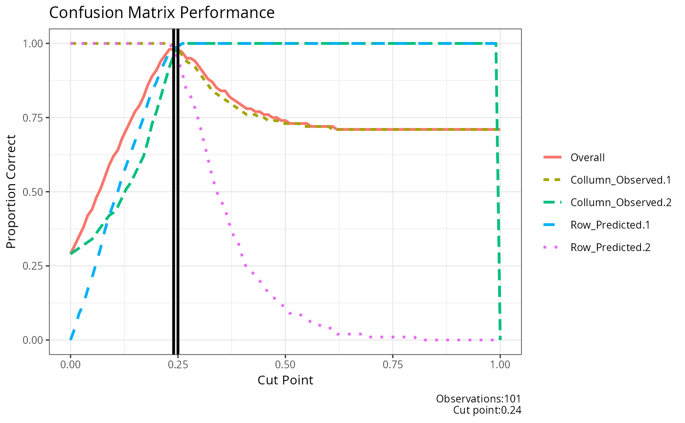
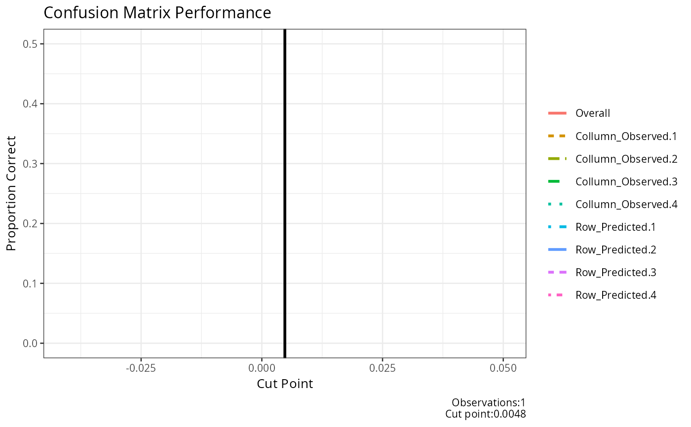

result_confusion_performance.RdThis function generates a plot to visualize the performance of a confusion matrix at various cut-off points. It evaluates the proportion of correct classifications and identifies the optimal cut-off point.
result_confusion_performance(
observed,
predicted,
step = 0.1,
base_size = 10,
title = ""
)Vector of observed outcomes. These are the true class labels.
Vector of predicted outcome probabilities. These are the predicted probabilities for the positive class.
Numeric value representing the stepping for tested cut values. Defaults to 0.1.
Integer value representing the base font size for the plot. Defaults to 10.
String representing the title of the plot. Defaults to an empty string.
This function evaluates the performance of a confusion matrix at different cut-off points. It iterates through a range of cut-off points, calculates the confusion matrix,and evaluates the proportion of correct classifications for each cut-off.
The function generates a plot that includes: -The proportion of correct classifications for different cut-off points. -Vertical lines indicating the optimal cut-off point. -A legend representing different performance metrics. -A caption showing the number of observations and the optimal cut-off point.
The function returns a list containing the plot,the data frame with cut-off performance,the optimal cut-off point, and the confusion matrix at the optimal cut-off.
# Example with numeric class labels
df<-data.frame(matrix(.999,ncol=2,nrow=2))
correlation_matrix<-as.matrix(df)
diag(correlation_matrix)<-1
df<-generate_correlation_matrix(correlation_matrix,nrows=1000)
df$X1<-ifelse(abs(df$X1) < 1,0,1)
df$X2<-abs(df$X2)
df$X2<-(df$X2-min(df$X2))/(max(df$X2)-min(df$X2))
result_confusion_performance(observed=round(abs(df$X1),0),
predicted=abs(df$X2),
step=0.01)
#> $plot_performance

#>
#> $cut_performance
#> cut_point Overall Collumn_Observed.1 Collumn_Observed.2 Row_Predicted.1
#> 1 0.00 0.29 1.00 0.29 0.00
#> 2 0.01 0.32 1.00 0.30 0.04
#> 3 0.02 0.35 1.00 0.31 0.09
#> 4 0.03 0.38 1.00 0.32 0.12
#> 5 0.04 0.42 1.00 0.33 0.17
#> 6 0.05 0.44 1.00 0.34 0.21
#> 7 0.06 0.48 1.00 0.36 0.26
#> 8 0.07 0.51 1.00 0.38 0.31
#> 9 0.08 0.55 1.00 0.40 0.37
#> 10 0.09 0.59 1.00 0.42 0.42
#> 11 0.10 0.62 1.00 0.43 0.46
#> 12 0.11 0.64 1.00 0.45 0.50
#> 13 0.12 0.68 1.00 0.48 0.55
#> 14 0.13 0.71 1.00 0.51 0.59
#> 15 0.14 0.74 1.00 0.53 0.63
#> 16 0.15 0.77 1.00 0.56 0.67
#> 17 0.16 0.79 1.00 0.59 0.71
#> 18 0.17 0.82 1.00 0.62 0.75
#> 19 0.18 0.86 1.00 0.67 0.80
#> 20 0.19 0.89 1.00 0.73 0.84
#> 21 0.20 0.91 1.00 0.77 0.87
#> 22 0.21 0.94 1.00 0.82 0.91
#> 23 0.22 0.96 1.00 0.87 0.94
#> 24 0.23 0.98 1.00 0.92 0.97
#> 25 0.24 0.98 0.99 0.96 0.98
#> 26 0.25 0.98 0.98 0.99 0.99
#> 27 0.26 0.97 0.96 1.00 1.00
#> 28 0.27 0.95 0.94 1.00 1.00
#> 29 0.28 0.95 0.93 1.00 1.00
#> 30 0.29 0.94 0.92 1.00 1.00
#> 31 0.30 0.92 0.90 1.00 1.00
#> 32 0.31 0.90 0.88 1.00 1.00
#> 33 0.32 0.88 0.86 1.00 1.00
#> 34 0.33 0.87 0.84 1.00 1.00
#> 35 0.34 0.85 0.83 1.00 1.00
#> 36 0.35 0.84 0.82 1.00 1.00
#> 37 0.36 0.84 0.81 1.00 1.00
#> 38 0.37 0.82 0.80 1.00 1.00
#> 39 0.38 0.81 0.79 1.00 1.00
#> 40 0.39 0.80 0.78 1.00 1.00
#> 41 0.40 0.79 0.77 1.00 1.00
#> 42 0.41 0.78 0.76 1.00 1.00
#> 43 0.42 0.78 0.76 1.00 1.00
#> 44 0.43 0.77 0.76 1.00 1.00
#> 45 0.44 0.77 0.75 1.00 1.00
#> 46 0.45 0.76 0.75 1.00 1.00
#> 47 0.46 0.76 0.74 1.00 1.00
#> 48 0.47 0.75 0.74 1.00 1.00
#> 49 0.48 0.75 0.74 1.00 1.00
#> 50 0.49 0.74 0.73 1.00 1.00
#> 51 0.50 0.74 0.73 1.00 1.00
#> 52 0.51 0.73 0.73 1.00 1.00
#> 53 0.52 0.73 0.73 1.00 1.00
#> 54 0.53 0.73 0.73 1.00 1.00
#> 55 0.54 0.73 0.72 1.00 1.00
#> 56 0.55 0.73 0.72 1.00 1.00
#> 57 0.56 0.72 0.72 1.00 1.00
#> 58 0.57 0.72 0.72 1.00 1.00
#> 59 0.58 0.72 0.72 1.00 1.00
#> 60 0.59 0.72 0.72 1.00 1.00
#> 61 0.60 0.72 0.72 1.00 1.00
#> 62 0.61 0.72 0.71 1.00 1.00
#> 63 0.62 0.71 0.71 1.00 1.00
#> 64 0.63 0.71 0.71 1.00 1.00
#> 65 0.64 0.71 0.71 1.00 1.00
#> 66 0.65 0.71 0.71 1.00 1.00
#> 67 0.66 0.71 0.71 1.00 1.00
#> 68 0.67 0.71 0.71 1.00 1.00
#> 69 0.68 0.71 0.71 1.00 1.00
#> 70 0.69 0.71 0.71 1.00 1.00
#> 71 0.70 0.71 0.71 1.00 1.00
#> 72 0.71 0.71 0.71 1.00 1.00
#> 73 0.72 0.71 0.71 1.00 1.00
#> 74 0.73 0.71 0.71 1.00 1.00
#> 75 0.74 0.71 0.71 1.00 1.00
#> 76 0.75 0.71 0.71 1.00 1.00
#> 77 0.76 0.71 0.71 1.00 1.00
#> 78 0.77 0.71 0.71 1.00 1.00
#> 79 0.78 0.71 0.71 1.00 1.00
#> 80 0.79 0.71 0.71 1.00 1.00
#> 81 0.80 0.71 0.71 1.00 1.00
#> 82 0.81 0.71 0.71 1.00 1.00
#> 83 0.82 0.71 0.71 1.00 1.00
#> 84 0.83 0.71 0.71 1.00 1.00
#> 85 0.84 0.71 0.71 1.00 1.00
#> 86 0.85 0.71 0.71 1.00 1.00
#> 87 0.86 0.71 0.71 1.00 1.00
#> 88 0.87 0.71 0.71 1.00 1.00
#> 89 0.88 0.71 0.71 1.00 1.00
#> 90 0.89 0.71 0.71 1.00 1.00
#> 91 0.90 0.71 0.71 1.00 1.00
#> 92 0.91 0.71 0.71 1.00 1.00
#> 93 0.92 0.71 0.71 1.00 1.00
#> 94 0.93 0.71 0.71 1.00 1.00
#> 95 0.94 0.71 0.71 1.00 1.00
#> 96 0.95 0.71 0.71 1.00 1.00
#> 97 0.96 0.71 0.71 1.00 1.00
#> 98 0.97 0.71 0.71 1.00 1.00
#> 99 0.98 0.71 0.71 1.00 1.00
#> 100 0.99 0.71 0.71 1.00 1.00
#> 101 1.00 0.71 0.71 0.00 1.00
#> Row_Predicted.2 Mean_proportion
#> 1 1.00 0.5725
#> 2 1.00 0.5850
#> 3 1.00 0.6000
#> 4 1.00 0.6100
#> 5 1.00 0.6250
#> 6 1.00 0.6375
#> 7 1.00 0.6550
#> 8 1.00 0.6725
#> 9 1.00 0.6925
#> 10 1.00 0.7100
#> 11 1.00 0.7225
#> 12 1.00 0.7375
#> 13 1.00 0.7575
#> 14 1.00 0.7750
#> 15 1.00 0.7900
#> 16 1.00 0.8075
#> 17 1.00 0.8250
#> 18 1.00 0.8425
#> 19 1.00 0.8675
#> 20 1.00 0.8925
#> 21 1.00 0.9100
#> 22 1.00 0.9325
#> 23 1.00 0.9525
#> 24 1.00 0.9725
#> 25 0.98 0.9775
#> 26 0.95 0.9775
#> 27 0.90 0.9650
#> 28 0.84 0.9450
#> 29 0.82 0.9375
#> 30 0.78 0.9250
#> 31 0.73 0.9075
#> 32 0.67 0.8875
#> 33 0.61 0.8675
#> 34 0.55 0.8475
#> 35 0.50 0.8325
#> 36 0.47 0.8225
#> 37 0.44 0.8125
#> 38 0.39 0.7975
#> 39 0.35 0.7850
#> 40 0.33 0.7775
#> 41 0.28 0.7625
#> 42 0.24 0.7500
#> 43 0.23 0.7475
#> 44 0.22 0.7450
#> 45 0.20 0.7375
#> 46 0.18 0.7325
#> 47 0.16 0.7250
#> 48 0.15 0.7225
#> 49 0.13 0.7175
#> 50 0.12 0.7125
#> 51 0.11 0.7100
#> 52 0.09 0.7050
#> 53 0.09 0.7050
#> 54 0.09 0.7050
#> 55 0.08 0.7000
#> 56 0.07 0.6975
#> 57 0.06 0.6950
#> 58 0.05 0.6925
#> 59 0.05 0.6925
#> 60 0.04 0.6900
#> 61 0.04 0.6900
#> 62 0.04 0.6875
#> 63 0.02 0.6825
#> 64 0.02 0.6825
#> 65 0.02 0.6825
#> 66 0.02 0.6825
#> 67 0.02 0.6825
#> 68 0.02 0.6825
#> 69 0.02 0.6825
#> 70 0.01 0.6800
#> 71 0.01 0.6800
#> 72 0.01 0.6800
#> 73 0.01 0.6800
#> 74 0.01 0.6800
#> 75 0.01 0.6800
#> 76 0.01 0.6800
#> 77 0.01 0.6800
#> 78 0.01 0.6800
#> 79 0.01 0.6800
#> 80 0.01 0.6800
#> 81 0.01 0.6800
#> 82 0.00 0.6775
#> 83 0.00 0.6775
#> 84 0.00 0.6775
#> 85 0.00 0.6775
#> 86 0.00 0.6775
#> 87 0.00 0.6775
#> 88 0.00 0.6775
#> 89 0.00 0.6775
#> 90 0.00 0.6775
#> 91 0.00 0.6775
#> 92 0.00 0.6775
#> 93 0.00 0.6775
#> 94 0.00 0.6775
#> 95 0.00 0.6775
#> 96 0.00 0.6775
#> 97 0.00 0.6775
#> 98 0.00 0.6775
#> 99 0.00 0.6775
#> 100 0.00 0.6775
#> 101 0.00 0.4275
#>
#> $cut
#> [1] 0.24 0.25
#>
#> $confusion_matrix
#> 0 1 sum p
#> 0 702.00 12.00 714.00 0.98
#> 1 5.00 281.00 286.00 0.98
#> sum 707.00 293.00 1000.00 1.00
#> p 0.99 0.96 1.00 0.98
#>
result_confusion_performance(observed=c(1,2,3,1,2,3),
predicted=abs(rnorm(6,0,sd=0.1)))
#> $plot_performance
#> `geom_line()`: Each group consists of only one observation.
#> ℹ Do you need to adjust the group aesthetic?

#>
#> $cut_performance
#> cut_point Overall Collumn_Observed.1 Collumn_Observed.2 Collumn_Observed.3
#> 1 0.004771 0.17 0 0.2 0
#> Collumn_Observed.4 Row_Predicted.1 Row_Predicted.2 Row_Predicted.3
#> 1 0 0 0.5 0
#> Row_Predicted.4 Mean_proportion
#> 1 0 0.0875
#>
#> $cut
#> [1] 0.004771
#>
#> $confusion_matrix
#> 0 1 2 3 sum p
#> 0 0.00 1.00 0.00 0.00 1.00 0.00
#> 1 0.00 1.00 2.00 2.00 5.00 0.20
#> 2 0.00 0.00 0.00 0.00 0.00 0.00
#> 3 0.00 0.00 0.00 0.00 0.00 0.00
#> sum 0.00 2.00 2.00 2.00 6.00 1.00
#> p 0.00 0.50 0.00 0.00 1.00 0.17
#>